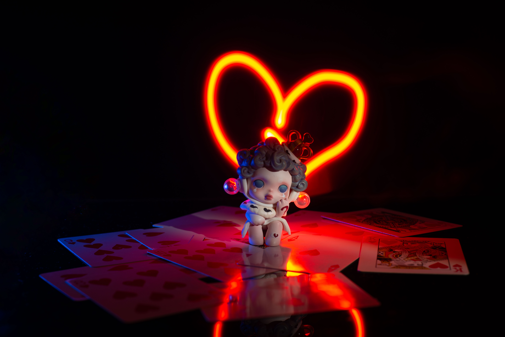

Seria Hirono
Hirono to kolejna popularna seria blind boxów. Styl Hirono jest bardziej melancholijny i artystyczny, często nawiązuje do emocji i nastrojów.
Figurki Hirono są cenione za subtelne kolory, dopracowane detale oraz spójny klimat całej kolekcji. Każda seria buduje własną, wyrazistą narrację, a poszczególne figurki często różnią się drobnymi elementami stylizacji, mimiką i pozą, co nadaje im bardziej kolekcjonerski i unikalny wymiar. Właśnie ta konsekwencja w projektowaniu sprawia, że całe zestawy wyglądają jak fragmenty jednej tajemniczej opowieści, w której urok miesza się z lekkim dreszczem i surrealistycznym klimatem. Dla wielu osób to nie tylko zabawki, ale małe dzieła sztuki.
Zarówno Skull Panda, jak i Hirono, są przykładami tego, jak mystery boxy stały się częścią kultury kolekcjonerskiej.
